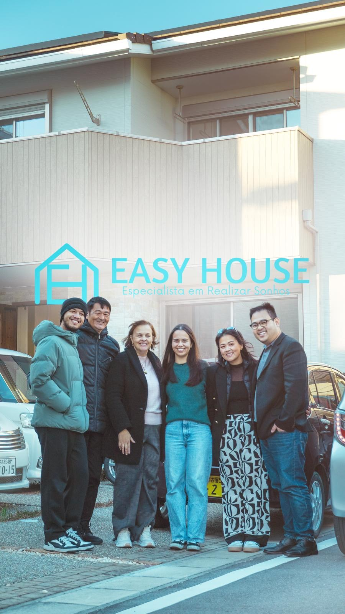

Aluguel · 賃貸
Encontramos seu imóvel e falamos japonês por você
Você diz a cidade, o valor que cabe no orçamento e quantos quartos precisa. A gente procura, agenda a visita e explica o contrato em português.
- Conversamos com imobiliárias e proprietários em japonês
- Ajudamos com fiador (保証会社) e documentação
- Explicamos cada custo antes de você assumir qualquer compromisso
Você manda o que procura e a gente volta com opções que fazem sentido.
株式会社EASY HOUSE· Licença 沖縄県知事(1)第5984号· Atendimento em português
Você se reconhece aqui?
O que costuma complicar na hora de alugar
Ligar e não conseguir se explicar
A imobiliária atende em japonês e a conversa trava logo no começo.
Não ter quem seja fiador
Sem alguém para garantir o contrato, muita gente desiste antes de tentar.
Não entender o contrato
São várias páginas em japonês com regras, multas e prazos difíceis de ler.
Ser recusado por ser estrangeiro
Alguns proprietários recusam sem explicar. Vale procurar quem aceita.
Ter pet e não achar imóvel
Imóvel que aceita animal (ペット可) é mais raro e exige busca específica.
Não saber o custo total da entrada
Além do aluguel, existem valores iniciais que surpreendem quem não foi avisado.
Para começar a busca
O que você precisa nos contar
Com estas informações já conseguimos procurar. Não precisa de documento nenhum agora.
Cidade ou região
Onde você trabalha ou onde as crianças estudam já ajuda a definir a área.
Valor de aluguel
Quanto cabe no orçamento por mês, contando taxas do condomínio.
Tamanho e quartos
Quantas pessoas vão morar e quantos quartos você precisa.
Quando quer mudar
Se é urgente ou se dá para esperar, muda bastante a estratégia da busca.
Transparência
Custos que costumam existir no aluguel japonês
Nem todo imóvel cobra tudo isso. Antes de qualquer decisão, mostramos os valores reais daquele contrato.
敷金 (shikikin)
Depósito de garantia. Costuma ser devolvido no fim do contrato, descontando reparos.
礼金 (reikin)
Valor pago ao proprietário, sem devolução. Hoje há imóveis que não cobram.
仲介手数料
Taxa de intermediação da imobiliária.
保証会社
Empresa que faz o papel de fiador quando você não tem um garantidor.
共益費 / 管理費
Taxa mensal de manutenção da área comum, somada ao aluguel.
火災保険
Seguro contra incêndio, normalmente obrigatório no contrato.
Sem surpresa: os valores mudam conforme o imóvel e a região. Antes de você assumir qualquer compromisso, apresentamos a soma total da entrada e do custo mensal daquele contrato específico.
Passo a passo
Como a busca acontece
Você diz o que procura
Cidade, valor, quartos e necessidades especiais, como pet ou térreo.
Procuramos as opções
Buscamos imóveis compatíveis e verificamos quais aceitam o seu perfil.
Visita acompanhada
Agendamos e vamos junto, traduzindo o que for preciso no local.
Contrato explicado
Explicamos o contrato em português antes da assinatura e acompanhamos a entrega das chaves.
Dúvidas frequentes
Perguntas mais comuns
Na maioria dos casos hoje se usa uma 保証会社 (empresa de garantia) no lugar do fiador pessoal. Ela passa por uma análise própria. Explicamos como funciona e ajudamos no processo.
Sim. Você fala com a gente em português e nós tratamos a parte em japonês com a imobiliária e o proprietário.
Procuramos imóveis ペット可. A oferta é mais limitada e costuma ter condições próprias, como depósito maior — avisamos antes de você visitar.
Depende da região, do valor e da época do ano. Depois que você envia o que procura, retornamos com as primeiras opções e explicamos o que é realista para o seu perfil.
A empresa atende em todo o Japão (全国対応). A lista de apartamentos publicada no site é focada em Aichi, mas para outras regiões basta nos contar o que procura.
Diga o que procura e a gente começa a busca
Mande cidade, valor e quantos quartos. Respondemos em português com as opções que encaixam no seu perfil.
Sem taxa para começar a conversa e sem compromisso.